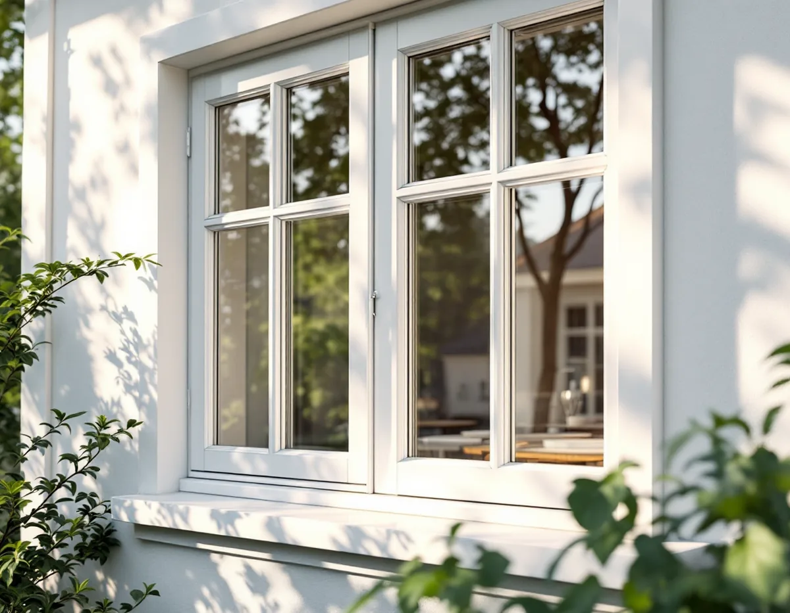
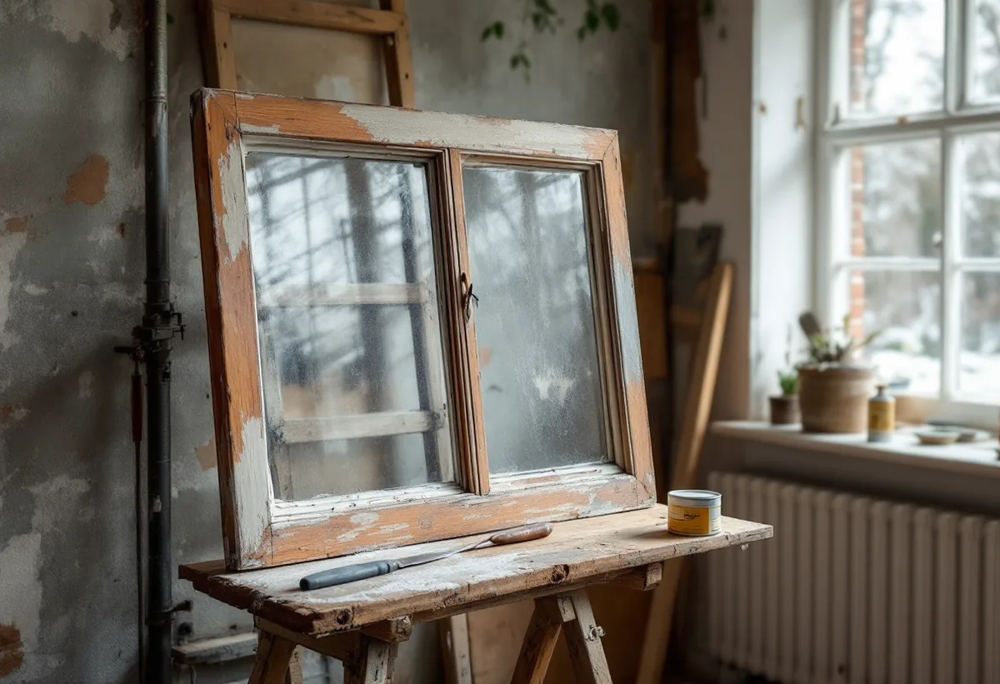
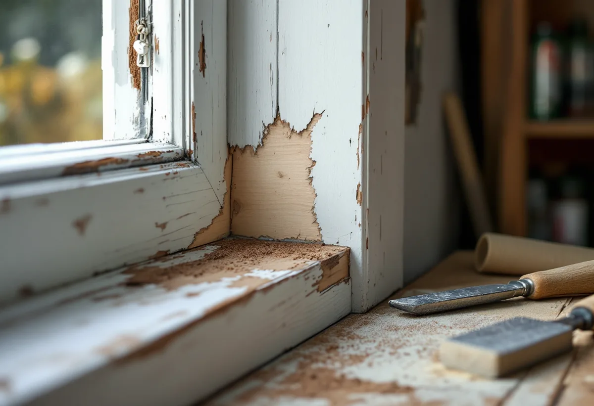

Platsbesök
Vi går igenom varje båge och karm, känner efter röta och tittar på kitt, färg och beslag. Besöket är gratis.

Geal Entreprenad AB renoverar träfönster på villor, radhus och äldre flerbostadshus i hela Stockholm: vi skrapar, lagar rötskadat virke, kittar om, målar med linoljefärg och tätar innerbågen.
Beskriv jobbet kort.
Något blev fel. Kontrollera uppgifterna eller ring 08 12 410 276.
Vi tittar på jobbet på plats innan du får offert.
Du ser vad som ingår och vad det kostar.
Vi drar av ROT direkt och sköter ansökan.
Geal Entreprenad AB, Bromma. Org.nr 559303-7566.

Du får ett gratis platsbesök och ett skriftligt kostnadsförslag, och ROT-avdraget dras direkt på fakturan. Här ser du vad som ingår, hur arbetet går till, vad priset beror på och när det är bättre att byta fönstren.
En fönsterrenovering börjar med en genomgång fönster för fönster. Vi känner efter röta i bågarnas bottenstycken och i karmens nedre del, tittar på kitt, färg och beslag och delar in fönstren i dem som bara behöver målas om och dem som måste tas isär och lagas. Indelningen står i kostnadsförslaget.
Bågarna lyfts av och fönsterhålen täcks under tiden. Lös färg skrapas bort, sprucket kitt tas ur, trasigt glas byts och rötskadat virke skärs bort och ersätts med nytt, friskt trä. Sedan kittas rutorna om, och bågarna grundas och målas. Karmen, fönsterblecket och fodren på utsidan ses över i samma omgång.
Till sist justeras gångjärn och beslag så att bågen sluter, och innerbågen får en tätningslist. Ett renoverat fönster ska gå lätt att öppna, stänga tätt och ha ett helt färgskikt som håller vattnet borta från träet.

Äldre träfönster är ofta gjorda av tätvuxet virke som går att laga gång på gång. Skadorna sitter oftast nedtill, i bågens bottenstycke och i karmens nedre hörn, där vatten blir stående. Är resten av virket friskt lagas den delen, och fönstret behåller sina proportioner, sitt glas och sina beslag.
Ett byte är rimligare när rötan har gått långt upp i både båge och karm, när fönstren redan har bytts mot en enklare konstruktion som inte går att laga eller när du vill ändra fönstrens storlek. Då beskriver vi alternativen under fönsterbyte i Stockholm.
I hus med kulturvärde finns ytterligare ett skäl att renovera: de ursprungliga fönstren är en stor del av husets utseende, och ett byte kan kräva lov. Vi säger vad vi ser vid platsbesöket och rekommenderar inte en renovering av fönster som inte tål den.
Riksantikvarieämbetet rekommenderar linoljekitt eller annat kitt på vegetabilisk oljebas till gamla fönster. Kittet är en knådbar massa av linolja och krita som håller väl på en linoljegrundad båge, men som torkar för snabbt och ofta spricker om kittfalsen inte har grundats först. Därför grundar vi falsen innan rutan kittas.
Ett fönster målas normalt med tre strykningar – grundning, mellanstrykning och slutstrykning – och färgen ska inte läggas på för tjockt. Linoljefärg torkar långsamt, så varje lager får sin tid. Sitter det gammal plastfärg på bågarna tas den bort där den har släppt eller stängt in fukt.
Målningen görs på plats när vädret tillåter. Bågarna kan också tas ned och målas på verkstad, vilket gör det möjligt att arbeta även vintertid och ger ett jämnare resultat.
Drag från ett gammalt fönster beror oftare på otäta bågar än på glaset. Det är innerbågen som ska tätas: läcker den varm rumsluft ut mellan bågarna kondenserar fukten på ytterbågens insida, rinner ned och samlas i kittfalsen, och där börjar rötan. En tätningslist på innerbågen och en översyn av drevningen runt karmen gör stor skillnad för komforten.
Boverkets energiguide beskriver flera sätt att förbättra ett befintligt fönster utan att byta det, bland annat att täta det och att byta den inre rutan till energiglas. På kopplade fönster kan glaset i innerbågen bytas medan den gamla rutan sitter kvar ytterst, så att fasadens uttryck inte ändras.
I hus från mitten av 1900-talet kan fönsterkitt och fogmassor innehålla asbest eller PCB. Boverket skriver att provtagning är det enda säkra sättet att veta. Vid misstanke bör kittet därför provtas innan det skrapas.
Äldre svenska träfönster finns i några huvudtyper, och de renoveras på lite olika sätt. De äldsta har en enkel ytterbåge och en lös innerbåge som sätts i till vintern. I många egnahem från 1900-talets första decennier sitter okopplade fönster, där ytter- och innerbågen öppnas var för sig. Senare blev kopplade fönster vanliga: två bågar som sitter ihop och öppnas som en, och som kan delas för putsning och målning.
På alla typerna är det ytterbågen som tar vädret och innerbågen som ska vara tät. Spröjsade bågar har många små rutor och därmed mycket kitt, vilket gör kittningen till en stor del av arbetet. Gamla rutor av munblåst eller valsat glas har en levande yta som nytt glas saknar, och vi är därför rädda om dem när bågarna tas isär. Spricker en ruta ersätter vi den med glas som liknar det gamla om du vill.
Altandörrar och fönsterdörrar i trä renoveras på samma sätt som fönstren, med extra uppmärksamhet på tröskeln och dörrbladets nederkant.
Ett renoverat fönster håller länge om färgskiktet hålls helt. Titta över fönstren en gång om året, särskilt bågarnas bottenstycken och karmens nedre del på husets söder- och västsida. Linoljefärg mattas med tiden, och en mattad yta kan strykas med linolja eller målas om med ett tunt lager innan träet har blivit bart.
Sprickor i kittet lagas när de upptäcks, så att vatten inte tar sig in bakom glaset. Håll dräneringshål och fönsterbleck rena, och låt inte snö eller löv ligga mot bågarna. Tätningslisten på innerbågen byts när den har tappat sin spänst.
Vi går igenom varje båge och karm, känner efter röta och tittar på kitt, färg och beslag. Besöket är gratis.
Det framgår vilka fönster som målas om och vilka som tas isär, med ROT-avdraget uträknat.
Bågarna lyfts av och fönsterhålen täcks medan arbetet pågår.
Lös färg och sprucket kitt tas bort, rötskadat virke ersätts och trasigt glas byts.
Rutorna kittas med linoljekitt, och bågarna målas med tre strykningar linoljefärg.
Innerbågen får tätningslist, gångjärn justeras och vi går igenom fönstren med dig.
Tiden beror på antalet bågar, hur många som måste tas isär och lagas och hur högt fönstren sitter. Det som styr kalendern är färgen: tre strykningar linoljefärg med torktid mellan varje lager gör att en båge är under arbete betydligt längre än den tid vi faktiskt står med penseln.
Utvändigt arbete på plats görs under den varma delen av året och läggs efter väder och väderstreck. På vintern kan bågarna i stället målas på verkstad. Fönsterhålen är täckta medan bågarna är borta, och tidplanen står i kostnadsförslaget.
På Skatteverkets lista över rotarbeten för småhus finns att reparera eller byta ut fönster, att måla fönster och att reparera fönsterbleck. Snickeriet, kittningen och målningen kan alltså alla ge avdrag. I en bostadsrätt ger bara arbete på fönstrets insida avdrag, till exempel att byta glaset i den inre bågen eller måla insidan.
Avdraget är 30 procent av arbetskostnaden, högst 50 000 kr per person och år och högst 75 000 kr tillsammans med rutavdrag. Material och resor ger inget avdrag, och bara arbetad tid på plats hos dig räknas – det som görs på verkstad redovisar vi för sig på fakturan, utan avdrag. Geal drar avdraget direkt på fakturan och ansöker om utbetalningen hos Skatteverket.
Vi publicerar inga prislistor för fönsterrenovering, eftersom två fönster av samma storlek kan vara i helt olika skick. Det som väger tyngst är antalet bågar och hur högt de sitter, hur många som måste tas isär, hur mycket virke som behöver ersättas, om gammal plastfärg ska bort, om bågarna målas på plats eller på verkstad och om innerbågarna ska få energiglas.
Efter platsbesöket får du ett skriftligt kostnadsförslag där arbete och material står var för sig och ROT-avdraget är uträknat. Besöket och kostnadsförslaget är gratis.
När fönstren behöver bytas.
Fönsterbyte i Stockholm →Måla fasaden i samma omgång.
Fasadmålning i Stockholm →Foder, lister och fönsterbänkar.
Snickare i Stockholm →Nya fönsterbleck.
Plåtslagare i Stockholm →Eller ring 08 12 410 276, mån–fre 08–17.
Beskriv jobbet kort.
Något blev fel. Kontrollera uppgifterna eller ring 08 12 410 276.